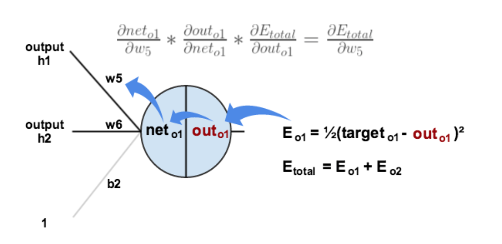

線形変換の逆伝播の導出
入力データ\(\mathbf{x}\)は\((N \times D)\)の行列、\(\mathbf{W}\)は\((D \times H)\)の行列、\(\mathbf{b}\)は要素数\(H\)のベクトルと考え、線形変換の計算は以下の式で表します。
\[\begin{split}
\begin{aligned}
\mathbf{y}
&= \mathbf{x} \mathbf{W} + \mathbf{b}
\\
&= \begin{pmatrix}
x_{0,0} & x_{0,1} & \cdots & x_{0,D-1} \\
x_{1,0} & x_{1,1} & \cdots & x_{1,D-1} \\
\vdots & \vdots & \ddots & \vdots \\
x_{N-1,0} & x_{N-1,1} & \cdots & x_{N-1,D-1}
\end{pmatrix}
\begin{pmatrix}
w_{0,0} & w_{0,1} & \cdots & w_{0,H-1} \\
w_{1,0} & w_{1,1} & \cdots & w_{1,H-1} \\
\vdots & \vdots & \ddots & \vdots \\
w_{D-1,0} & w_{D-1,1} & \cdots & w_{D-1,H-1}
\end{pmatrix}
+ \begin{pmatrix}
b_0 & b_1 & \cdots & b_{H-1}
\end{pmatrix}
\\
&= \begin{pmatrix}
\sum_{d=0}^{D-1} x_{0,d} w_{d,0} + b_0 &
\sum_{d=0}^{D-1} x_{0,d} w_{d,1} + b_1 &
\cdots &
\sum_{d=0}^{D-1} x_{0,d} w_{d,H-1} + b_{H-1} \\
\sum_{d=0}^{D-1} x_{1,d} w_{d,0} + b_0 &
\sum_{d=0}^{D-1} x_{1,d} w_{d,1} + b_1 &
\cdots &
\sum_{d=0}^{D-1} x_{1,d} w_{d,H-1} + b_{H-1} \\
\vdots & \vdots & \ddots & \vdots \\
\sum_{d=0}^{D-1} x_{N-1,d} w_{d,0} + b_0 &
\sum_{d=0}^{D-1} x_{N-1,d} w_{d,1} + b_1 &
\cdots &
\sum_{d=0}^{D-1} x_{N-1,d} w_{d,H-1} + b_{H-1}
\end{pmatrix}
\\
&= \begin{pmatrix}
y_{0,0} & y_{0,1} & \cdots & y_{0,H-1} \\
y_{1,0} & y_{1,1} & \cdots & y_{1,H-1} \\
\vdots & \vdots & \ddots & \vdots \\
y_{N-1,0} & y_{N-1,1} & \cdots & y_{N-1,H-1}
\end{pmatrix}
\end{aligned}\end{split}\]
ここで、「\(n\)番目の出力データの\(h\)番目の項\(y_{n,h}\)」は、
\[
y_{n,h}
= \sum_{d=0}^{D-1} x_{n,d} w_{d,h} + b_h
\]
で計算できるのが分かります。
重みの勾配
連鎖律より、\(\frac{\partial L}{\partial w_{d,h}}\)は次の式で求められます
\[
\frac{\partial L}{\partial w_{d,h}}
= \sum_{n=0}^{N-1}
\frac{\partial L}{\partial y_{n,h}}
\frac{\partial y_{n,h}}{\partial w_{d,h}}
\]
\(\frac{\partial L}{\partial y_{n,h}}\)は、\(y_{n,h}\)に関する\(L\)の微分です。
\(\frac{\partial y_{n,h}}{\partial w_{d,h}}\)は、\(w_{d,h}\)に関する\(y_{n,h}\)の微分です。
ここで、\(\frac{\partial y_{n,h}}{\partial w_{d,h}}\)は、
\[\begin{split}
\begin{aligned}
\frac{\partial y_{n,h}}{\partial w_{d,h}}
&= \frac{\partial}{\partial w_{d,h}} \left\{
\sum_{d=0}^{D-1} x_{n,d} w_{d,h} + b_h
\right\}
\\
&= \frac{\partial}{\partial x_{n,d}} \Bigl\{
x_{n,0} w_{0,h} + \cdots + x_{n,d} w_{d,h} + \cdots + x_{n,D-1} w_{D-1,h} + b_h
\Bigr\}
\\
&= 0 + \cdots + x_{n,d} + \cdots + 0 + 0
\\
&= x_{n,d}
\end{aligned}
\end{split}\]
になりますため、
\[
\frac{\partial L}{\partial w_{d,h}}
= \sum_{n=0}^{N-1}
\frac{\partial L}{\partial y_{n,h}}
x_{n,d}
\]
バイアスの勾配
同じく連鎖律より、\(\frac{\partial L}{\partial b_h}\)は次の式で求められます。
\[
\frac{\partial L}{\partial b_h}
= \sum_{n=0}^{N-1}
\frac{\partial L}{\partial y_{n,h}}
\frac{\partial y_{n,h}}{\partial b_h}
\]
\[\begin{split}
\begin{aligned}
\frac{\partial y_{n,h}}{\partial b_h}
&= \frac{\partial}{\partial w_{d,h}} \left\{
\sum_{d=0}^{D-1} x_{n,d} w_{d,h} + b_h
\right\}
\\
&= 0 + 1
\\
&= 1
\end{aligned}
\end{split}\]
まとめると、
\[
\frac{\partial L}{\partial b_h}
= \sum_{n=0}^{N-1}
\frac{\partial L}{\partial y_{n,h}}\]
ニューラルネットワークにおける誤差逆伝播法
連鎖律より勾配を計算する考え方をニューラルネットワークにも適用することができます。具体的には、ニューラルネットワークを構成する関数が持つパラメータについての目的関数の勾配を、順伝播で通った経路を逆向きにたどるようにして途中の関数の勾配の掛け算によって求めます。
ここから、手計算を通じて誤差逆伝播法の実装を理解しましよう。
\[
i_{1} = 0.05,i_{2} = 0.10\]
\[
w_{1} = 0.15,w_{2} = 0.20,w_{3} = 0.25,w_{4} = 0.30
\]
\[
w_{5} = 0.40,w_{6} = 0.45,w_{7} = 0.50,w_{8} = 0.55
\]
\[
h(x)
= \frac{1}{1 + \exp(-x)}
\]
\[
L = \dfrac{1}{N} \sum_{n=1}^{N} (t_{n} - y_{n})^2
\]

Fig. 5 ニューラルネットワークの実装例
順伝播の流れ
out_h2=0.39249999999999996
out_o1=0.7165932011681534
out_o2=0.7319669364891265
例えば、\(w_5\)の勾配を計算する際には、

Fig. 6 誤差逆伝播法で\(w_5\)の勾配を求める
\[
\frac{\partial L}{\partial w_5} = \frac{\partial L}{\partial out_{o1}}\frac{\partial out_{o1}}{\partial net_{o1}}\frac{\partial net_{o1}}{\partial w_5}
\]
\(\frac{\partial L}{\partial out_{o1}}\)を計算する
\[
L= \frac{1}{2}(target_{o_{1}}-out_{o_{1}})^2+\frac{1}{2}(target_{o_{2}}-out_{o_{2}})^2
\]
合成関数の微分\(g(f(x))= g^{\prime}(f(x))f^{\prime}(x)\)によって
\[
\frac{\partial L}{\partial out_{o1}}= 2*\frac{1}{2}(target_{o_{1}}-out_{o_{1}})*-1+0
\]
d_out_o1=0.7065932011681534
\(\frac{\partial out_{o1}}{\partial net_{o1}}\)を計算する
\[
out_{o1}= sigmod(net_{o_{1}})
\]
Sigmoid関数の微分は \(f^{\prime}(x)=f(x)(1-f(x))\) なので
\[
\frac{\partial out_{o1}}{\partial net_{o1}}= out_{o1}(1-out_{o1})
\]
Note
シグモイド関数の勾配の証明
\[\begin{split}
\begin{aligned}
\frac{d y}{d x}
&= \frac{d}{d x} \Bigl\{
\frac{1}{1 + \exp(-x)}
\Bigr\}
\\
&= - \frac{1}{(1 + \exp(-x))^2}
\frac{d}{d x} \Bigl\{
1 + \exp(-x)
\Bigr\}
\\
&= - \frac{1}{(1 + \exp(-x))^2} \Bigl(
- \exp(-x)
\Bigr)
\\
&= \frac{\exp(-x)}{(1 + \exp(-x))^2}
\\
&= \frac{1}{1 + \exp(-x)}
\frac{\exp(-x)}{1 + \exp(-x)}
\\
&= \frac{1}{1 + \exp(-x)}
\frac{1 + \exp(-x) - 1}{1 + \exp(-x)}
\\
&= \frac{1}{1 + \exp(-x)} \left(
\frac{1 + \exp(-x)}{1 + \exp(-x)}
- \frac{1}{1 + \exp(-x)}
\right)
\\
&= y (1 - y)
\end{aligned}
\end{split}\]
d_net_o1=0.20308738520773184
\(\frac{\partial net_{o1}}{\partial w_5}\)を計算する
\[
net_{o_{1}}=w_{5}*net_{h_{1}}+w_{6}*net_{h_{2}}+b_{2}*1
\]
\[
\frac{\partial net_{o1}}{\partial w_5}= net_{h_{1}}
\]
パラメータを更新する
\[
w_5^+ = w_{5}- \eta \frac{\partial {L}}{\partial w_5}
\]